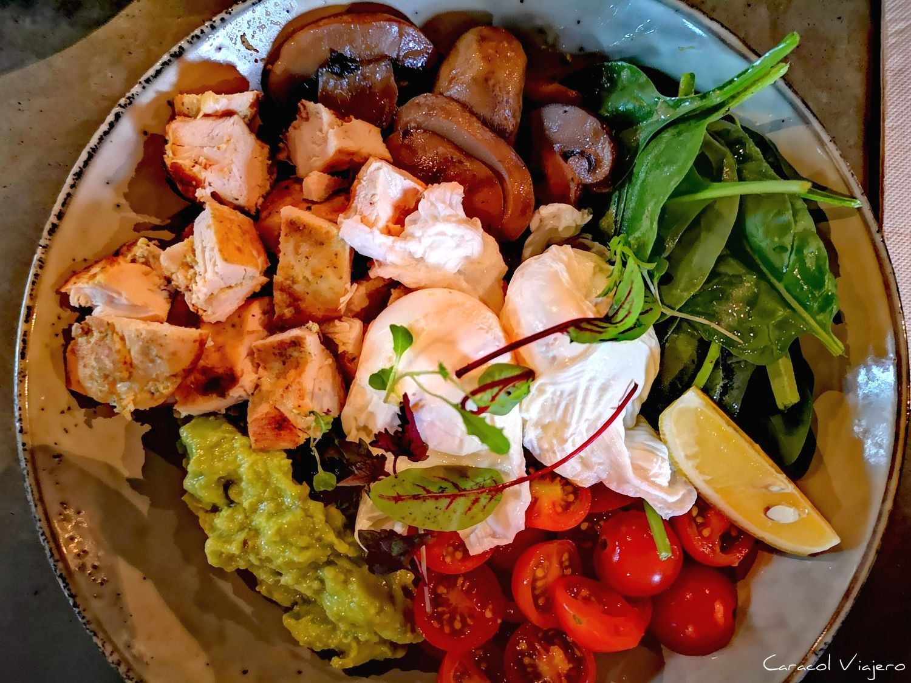

BARRAMUNDI
Ingredientes:
Cuatro filetes de barramundi
Una taza de nueces de macadamia
Una taza de pan rallado
Una cucharada de ajo en polvo
Una cucharada de perejil picado
Una cucharada de jugo de limón
Sal y pimienta
Aceite de oliva
Preparación:
Precalentar el horno a 180°C.
Triturar las nueces de macadamia en un procesador de alimentos hasta que queden en trozos pequeños.
En un tazón, mezclar las nueces trituradas con el pan rallado, el ajo en polvo, el perejil, el jugo de limón, la sal y la pimienta.
Colocar los filetes de barramundi en una bandeja para horno y rociarlos con aceite de oliva.
Cubrir los filetes con la mezcla de nueces y pan rallado, presionando ligeramente para que se adhiera bien.
Hornear durante 15-20 minutos, hasta que la costra esté dorada y el pescado se desmenuce fácilmente con un tenedor.
Servir caliente y disfrutar de este plato único y delicioso.
Otras opciones de presentación:
Si prefieres una versión más ligera de esta receta, puedes optar por cocinar el barramundi a la parrilla en lugar de hornearlo.
FAIRY BREAD
Un elemento básico en las celebraciones de cumpleaños para los niños australianos.
>
BRUNCH

Ingredientes:
Preparación:
Se tuesta el pan de muffin, se coloca el salmón y encima el huevo pochado:
Es una combinación de desayuno y almuerzo australiano y se puede preparar según lo que prefiera la persona,
no tiene unos elementos en específico para su preparación